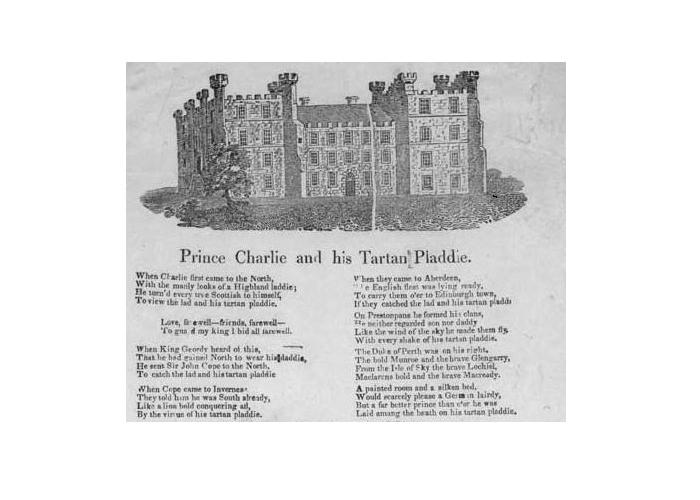
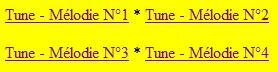

Prince Charlie and his Tartan Plaidie (King Fareweel!)
Le Prince Charles et son plaid de tartan (L'Adieu au Roi)
The movements of Cope's army before Prestonpans


Tunes sequenced by Christian Souchon
|
To the lyrics:
"King fareweel" is a Jacobite song lamenting the demise of Bonnie Prince Charlie and documenting the fascination exercised by his adoption of the Highland dress. It was recorded at least 13 times for the sound archives of the School of Scottish Studies between 1952 and 1962 and published at the site "Tobar an Dulchais". All these versions are more or less variants to the broadside "Prince Charlie and his Tartan Plaidie" kept at the National Library of Scotland (shelfmark: L.C.Fol.70(141)) published circa 1830-1860. The later version N°3 (recorded in December 1961) expanded with additional words inspired to the folk singer Andy (Andrew) Robb Hunter (born 1940) by the song Jacobite Highland Laddie is clearly different from the others. Besides, stanzas 1, 2, 3 & 4 of the present song are interspersed, with slight changes, in "Jacobite Highland Laddie". One of the "Tobar an Dulchais" contributors, Jock Cameron, explains that, in his opinion, the song is an answer to the Battle of Harlaw (1411) and the origin of 'Hey Johnnie Cope'. He got the song from his grandfather, who was a Black Watch soldier from the boundaries of Inverness. To the tunes: The first three tunes were recorded for the School of Scottish Studies and published at the "Tobar an Dulchais" site: The tune is closely related to that of the emigrant song "Callieburn" . In particular, both songs have in common the chorus "King farewell, Friends farewell..." The title "King fareweel" ascribed to the present song is confusing. It sums up the chorus "Love...to guard my King I bid a fareweel". |
A propos des paroles:
"King fareweel" est un chant jacobite qui déplore l'éviction du Prince Charles et démontre combien le port du costume des Hautes Terres l'avait rendu populaire. Il a donné lieu à au moins 13 enregistrements pour la phonothèque de la School of Scottish Studies entre 1952 et 1962, publiés sur le site "Tobar an Dulchais". Toutes ces versions procèdent de la feuille volante "Prince Charlie and his Tartan Plaidie" conservée à la National Library of Scotland (repère: L.C.Fol.70(141)) imprimée vers 1830-1860. La version récente N°3 (enregistrée en décembre 1961) est une œuvre originale plus longue, inspirée au chanteur folk Andy (Andrew) Robb Hunter (né en 1940) par le chant Jacobite Highland Laddie , qui se distingue nettement des autres. D'ailleurs, les strophes 1, 2, 3 & 4 du présent chant se retrouvent, dispersées mais presque identiques, dans ledit "Jacobite Highland Laddie". L'un des chanteurs de "Tobar an Dulchais", Jock Cameron, affirme qu'à son avis, le chant fait écho à la Bataille de Harlaw (1411) et est à l'origine du fameux 'Hey Johnnie Cope'. Il tient sa version de son grand-père qui servait dans la "Garde Noire" dans la zone frontalière d'Inverness. A propos des mélodies: Les trois premières mélodies ont été enregistrées pour la School of Scottish Studies et publiées sur le site "Tobar an Dulchais": La mélodie est très proche de celle du chant d'émigrants "Callieburn" . En particulier, les deux chants partagent le même refrain "King farewell, Friends farewell..." Le titre "L'Adieu au roi" qu'on donne souvent à notre chant prête à confusion. Il résume le refrain "Mon amie...pour servir mon roi je te dis adieu". |

|
1. When Charlie first cam' tae the North
With the manly look o' a Highland laddie, He turned every true Scot tae himsel' Tae view the lad an' his tartan plaidie Chorus: Love fareweel, friends fareweel Tae guard my King I bid a' fareweel 2. When King Geordie heard o' this, That he had gaen North tae win for his daddy, He sent John Cope up tae the North Tae catch the lad an' his tartan plaidie. 3. When Cope cam' tae Inverness, They told him he was South already. Like a lion bold he conquered all Wi' every shake o' his tartan plaidie. 4. When they cam' tae Aberdeen, The English fleet was lying ready Tae carry them ower tae Edinburgh toon, Tae catch the lad and his tartan plaidie. 5. On Prestonpans he formed his [we arranged our] clans, He neither regarded son nor [and many a baby lost its] daddy; Like the wind o' the sky he [we] made them tae fly, Wi' every shake [wave] o' his [the] tartan plaidie. [*] 6. The Duke of Perth was on his right, The bold Munroe and the brave Glengarry, From the Isle of Skye the brave Lochiel, McLarens bold and the brave MacReady. 7. A painted room and a silken bed Would scarcely please a wee German Laddie But a far better Prince than ever he was Laid amang the heather on his Highland plaidie. [*] in brackets: as sung by Adam and Robert Lamb for the School of Scottish Studies in 1956 (Tobar an Dualchais 3178 & 10985) |
1. Quand Charlie s'en vint visiter le Nord
D'un vrai Highlander il avait l'allure, Tous n'avaient d'yeux que pour son noble port Son plaid de tartan, sa fière figure! Refrain: Ma chère, embrasse-moi, Je m'en vais combattre pour mon roi. 2. Quelque temps après, le Roi George sut, Que Charles venait lutter pour son père. Il envoya John Cope s'emparer de L'homme au plaid de tartan en bandoulière. 3. Quand Cope arriva devant Inverness, Charles vers le Sud s'était mis en route, Devant lui tombaient murs et forteresses Grace au tartan qu'il agitait, sans doute. 4. Lorsqu'en Aberdeen John Cope arriva, Déjà l'attendait la flotte saxonne. Pour le conduire à Edimbourg, l'endroit Où l'on saisirait le tartan et l'homme. 5. A Preston Charlie déploya ses clans, Sans demander au fils où est son père; L'ennemi s'enfuit poussé par le vent, Qu'en s'agitant son tartan il génère. 6. Le Duc de Perth était à son côté; Le fier Monroe, l'ardent Glengarry Venu de Skye, et le bouillant Lochiel, Sans oublier MacLaren et MacRae. 7. Les lambris dorés et les draps de soie Au petit Germain suffisent à peine. Mais un Prince qui le vaut mille fois Sur la lande dort en cape de laine. (Trad. Ch. Souchon (c) 2004) |
Map
|
After consulting the
Lord President
and the law-officers of the crown,
Sir John Cope
decided to check the insurrection in its bud and to march to the Highlands with the troops he could collect, amounting to 3,000 men. He set off from
Edinburgh
to Stirling on the 19th August. On the same day Charlie placed himself at the head of his army.
With the 1,400 men, 4 cannons and 1,000 stands of spare arms (for the Highlanders who might join him) he found in Stirling , he began his march towards the North. He halted on 21st at Crieff (to see map, click on link above) where he met the Duke of Athol l and his younger brother Lord George Murray , supposed, like other Highland chiefs to raise their men to join his force, an expectation which proved not likely to be realised. On the 25th he was in view of the Corriearrick pass over which he intended to march into Lochaber to reach Fort Augustus , when he met the Captain Sweetenham who had been taken prisoner at Fort William, purposely released on his parole by Charlie. The captain informed him that Charlie's forces amounted to 3,000 men, as on the road many parties of Highlanders hastened to him and were in full march to Corriearrick where they intended to give battle, availing themselves of the terrain. Alarmed, Cope called a council of war, at Dalwhinnie on the 27th, who abandoned the design of marching to Fort Augustus over Corriearrick and decided to march over Inverness. Cope proceeded by forced marches to Inverness where he arrived on 29t August and met the Lord President who showed him a letter from the Baron of McDonald giving a list of the clan chiefs who had joined Charlie. Having failed to obtain reinforcement from local Highlanders, he determined to march to Aberdeen and embarked his troops for the Firth of Forth to protect Edinburgh menaced by Charlie's army. He landed his troops at Dunbar on the 16th of September, where they were joined by two fleeing regiments of dragoons (cavalry). On the 19th, he left Dunbar in the direction of Edinburgh in a long file of cavalry, infantry, cannons and baggagecarts which attracted the notice of the country people who flocked from all quarters to see this uncommon spectacle. On the next day he took up position on the plain known by the name of Gladsmuir with his front to the west , is right extending towards the sea in the direction of Seton and his left towards the village of Preston . These dispositions had scarcely been made when the whole of the Highland army appeared. In the meantime, Charles had left Glenfinnan on the 20th of August and marched to the head of Loch Lochy where he was urged by his adherents to issue a proclamation offering a reward for the apprehension of the "Elector of Hanover" in reply to the one for his own apprehension . He did it in very clever and moderate terms. On the 23rd at Fassifern , the seat of Lochiel's brother, he was informed of the march of Sir John Cope from Stirling and arrived at Moy on the following day. On the 26th he took up his quarters at the castle of Invergary where he received intelligence that Cope was advanced in his march to the north and intended to cross Corriearrick . At the same time Lord Lovat offered him his services and advised him to march north to raise other clans and prompt other chiefs -of McLeods, McKenzies, Grants, McKintoshes- to join him. But Tullibardine and Murray of Broughton, his secretary opposed this suggestion and urged him to capture Edinburgh instead were many more important persons were ready to join his ranks. This opinion was followed by Charles who proceeded in this direction. He was joined by new clans on his way to Edinburgh: at Low Bridge , by 260 Stewarts of Appin led by Stewart of Ardshiel , at Aberchallader , by 600 McDonalds of Glengarry led by Angus McD of Glengarry , and by a party of the Grants of Glenmoriston , so that his forces now amounted to 2,000 men, outnumbering those of Sir John Cope. Source: Electricscotland.com |
Après en avoir référé au
Lord Président
et aux magistrats de la Couronne,
Sir John Cope
décida d'étouffer dans l'œuf l'insurrection et de marcher sur les Highlands avec les forces qu'il put réunir, environ 3.000 hommes. Il quitta
Edimbourg
pour rejoindre Stirling le 19 août, au moment même où l'armée de Charlie se mettait en route.
Avec les 1.400 hommes, 4 canons et 1.000 affuts de fusils de rechange (destinés aux Highlanders qui voudraient le rejoindre) trouvés à Stirling , il se mit en marche vers le Nord. Il s'arrêta le 21 à Crieff (cliquer sur lien ci-dessus pour voir la carte) où il rencontra le Duc d'Atholl et son frère Lord George Murray , censés, comme d'autres chefs, recruter des hommes pour grossir ses rangs, une attente à laquelle il s'avéra bien difficile de répondre. Le 25 il était en vue du col de Corriearrick qu'il voulait franchir pour entrer dans le massif du Lochaber et rejoindre le Fort Augustus . C'est alors qu'il rencontra le capitaine Sweetenham qui avait été fait prisonnier à Fort William et que Charles avait, à dessein, libéré sur parole. Ce capitaine l'informa que l'armée de Charlie était forte de 3.000 hommes, qu'elle faisait des nouvelles recrues au fur et à mesure qu'elle avançait et qu'elle se dirigeait vers le col de Corriearrick où elle s'apprêtait à livrer bataille en profitant de l'avantage du terrain. Effrayé, Cope réunit un conseil de guerre à Dalwhinnie , le 27 août, lequel décida d'abandonner l'idée d'aller à Fort Augustus en passant par Corriearrick et de passer plutôt par Inverness. Il se dirigea donc à marches forcées vers Inverness où il arriva le 29 août et rencontra le Lord Président qui lui montra une lettre du Chef McDonald de Sleat énumérant les chefs de clans ralliés à Charlie. N'ayant pu obtenir de renforts des Highlanders du cru, il dut se résoudre à se diriger vers Aberdeen d'où il embarqua ses troupes pour le Firth of Forth en vue de défendre Edimbourg menacée. Le 16 septembre, il débarqua ses troupes à Dunbar où elles furent rejointes par 2 régiments de dragons (cavaliers) qui fuyaient devant l'ennemi. Le 19 septembre, son armée quitta Dunbar en direction d'Edimbourg étirant une interminable file de cavaliers, fantassins, canons et fourgons à bagages qui attira une foule de paysans accourus de toutes parts pour contempler ce spectacle insolite. Le jour suivant, elle prit position dans la plaine de Gladsmuir , le front dirigé vers l'ouest, l'aile droite s'étendant jusqu'à la mer en direction de Seton et l'aile gauche vers le village de Preston . A peine était-elle ainsi déployée que l'armée des Highlands au grand complet apparut. Pendant ce temps-là, Charles avait quitté Glenfinnan le 20 août et se dirigeait vers l'extrémité du Loch Lochy où il fut pressé par son entourage de publier une proclamation en réponse promettant la même somme pour l'arrestation de l'"Electeur de Hanovre" que pour sa propre arrestation . C'est ce qu'il fit en termes particulièrement mesurés. Le 23, à Fassifern , résidence du frère de Lochiel , il fut informé que Sir John Cope se dirigeait vers le nord et il parvint à Moy le jour suivant. Le 26 il s'installa au château d' Invergary où il apprit que Cope voulait passer par le col de Corriearrick . Au même moment, Loch Lovat lui offrait ses services et lui conseillait de poursuivre vers le nord pour soulever d'autres clans et inciter d'autres chefs -les McLeod, McKenzie, Grant, McKintosh- à se joindre à lui. Mais Tullibardine et Murray of Broughton, son secrétaire, s'y opposèrent, tout en le pressant de s'emparer d'Edimbourg, où, pensaient-ils des personnages autrement importants rejoindraient son camp. Charles se rangea à ce dernier avis et poursuivit sa route dans cette direction. Il vit d'autres clans grossir ses rangs au fur et à mesure de son avance: à Low Bridge , 260 Stewart d'Appin avec à leur tête Stewart d'Ardshiel , à Aberchallader , 600 McDonalds de Glengarry commandés par Angus McD de Glengarry , et un groupe de Grant de Glenmoriston , qui portèrent le total de ses effectifs à 2.000 , chiffre supérieur à ceux dont disposait Cope. Source: Electricscotland.com |